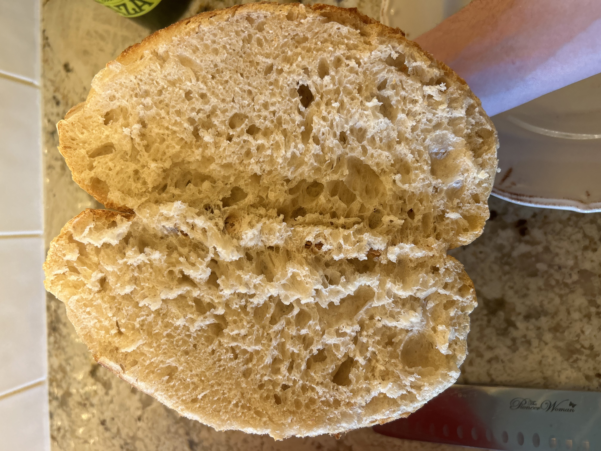
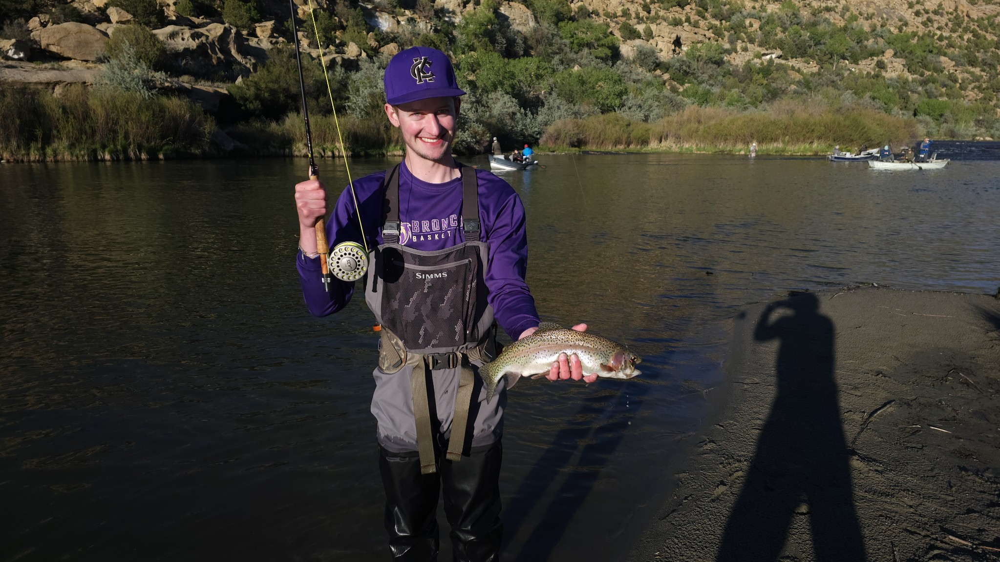

Data Viz
Navajo Nation Food Insecurity
The communities I want to serve face real, documented challenges. This data story explores food insecurity across the Navajo Nation.

Wild yeast, flour, water, salt — and a lot of waiting.
Sourdough pulled me in during a long semester when I needed something tactile — something that wasn't a screen. There's a meditative quality to feeding a starter, watching it double, shaping a loaf, and waiting overnight to see if it worked. And when it does, you get to eat it, which is a nice bonus.
The science hooked me just as much as the craft. Wild fermentation, gluten development, the Maillard reaction that gives the crust its color — baking turns out to be just as interesting as any chemistry class.
A healthy starter is everything. Signs yours is ready to bake with:
I keep it simple — add everything together at once and work it in by hand:
Do a set of stretch-and-folds every 30 minutes for the first 2 hours. Watch for:
The last steps before the oven:

That open crumb doesn't happen by accident — that's hours of fermentation paying off.
One of the best breakdowns of what's actually happening inside your dough:
New Mexico rivers, cold mornings, and the discipline of a perfect cast.

Landing a rainbow trout on the San Juan River, New Mexico.
I grew up fishing in New Mexico, and fly fishing is the version of it that kept me coming back as I got older. My home water is the San Juan River in northern New Mexico — one of the best tailwater fisheries in the country, known for its dense populations of rainbow and brown trout. It demands more than regular fishing — the cast, the read of water, the match of fly to hatch — and that's exactly what I like about it. You can't be distracted and fish well.
There's something about standing in the San Juan, in land that the Navajo and other peoples have called home for centuries, that feels important to me given the work I want to do. The landscape isn't just scenery. It's context.
The communities I want to serve face real, documented challenges. This data story explores food insecurity across the Navajo Nation.